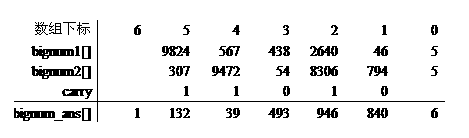
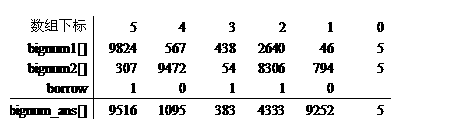

一般我们称基本数据类型无法表示的整数为大整数。而对于那些精度要求很高的数据通常称为高精度数，或称大数。
表示和存放大数的一个简单的方法就是：用数组存放和表示大数。一个数组元素，存放大数中的一位。
显然，在C/C++语言中，int类型（4个字节/32位计算机）数组元素存储十进制的一位数字非常浪费空间，并且运算量也非常大，因此可将存储优化为万进制，即数组的每个元素存储大整数数字的四位。
为什么选择万进制，而不选择更大的进制呢？这是因为万进制中的最大值9999相乘时得到的值是99980001，不会超过4个字节的存储范围，而十万进制中的最大值99999相乘时得到的值是9999800001，超过4个字节的存储范围而溢出，从而导致程序计算错误。
【例1】非负大整数加法和减法。
编写一个程序，求两个不超过200 位的非负整数的和与差。
（1）编程思路。
在编写程序代码过程中作如下定义：
const int base=10000;
const int maxlen=50+2;
int bignum[maxlen];
说明：base表示进制为万进制，maxlen表示大整数的长度，1个元素能存储4个十进制位，50个元素就存储200个十进制位，51个元素可以存储204个十进制位，另外加的1表示下标为0的元素另有它用，程序用作存储当前大整数的位数。
下面先来讨论大整数的加法和减法运算的实现。
可以采用小学中曾学习的竖式加法和减法。两个大整数98240567043826400046和3079472005483080794进行加法运算，如图1所示。

图1 加法的计算过程
从图1中可以得知，做加法运算是从低位向高位进行，如果有进位，下一位进行相加时要加上进位，如果最高位已计算完还有进位，就要增加存储结果的位数，保存起进位来。关于进位的处理，一般定义单独变量carry进行存储。
两个大整数98240567043826400046和3079472005483080794进行减法运算，如图2所示。
 图2 减法的计算过程
图2表示出了减法的计算过程，与加法不同的地方是进位变成了借位，另外就是计算结果的位数可能会比被减数的位数少，因此在处理过程中需要确定结果到底是多少位的。
日常我们做减法时，如果被减数小于减数，我们是把两数反过来进行相减，在前面添加负号标识。因此，程序中在编写减法子函数时是约定bignum1大于bignum2的，调用时首先判断两个大整数的大小，然后根据两数的大小决定如何调用。
再来讨论一下万进制大整数的输出问题。
采用万进制来进行大整数的加、减运算，虽然提高了程序的执行效率，但在输出时却带来了问题，如在加法示例中的结果从高位到低位分别为1、132、39、493、946、840。如果仍按照平常的输出一样直接输出时，结果为113239493946840，但定义万进制时明确过每一位是占十进制的四位，132这一位应该输出0132而不是132。因此在输出时应首先输出最高位（因最高位前面是不补0的），然后再输出其他位，如果不足四位，用0补充。
（2）源程序。
#include <iostream>
using namespace std;
const int base=10000;
const int maxlen=50+1;
void charTobignum(char *ch,int *bignum)
{
int len,i,j,p,num;
memset(bignum,0,sizeof(int)*maxlen);
len=strlen(ch);
bignum[0]=len%4==0?len/4:len/4+1;
i=1;
while (i<=len/4)
{
num=0;
p=len-4*i;
for(j=1;j<=4;j++)
num=num*10+(ch[p++]-'0');
bignum[i]=num;
i++;
}
if (len%4!=0)
{
num=0;
for (i=0;i<=len%4-1;i++)
num=num*10+(ch[i]-'0');
bignum[len/4+1]=num;
}
}
void addition(int *bignum1, int *bignum2, int *bignum_ans)
{
int carry=0;
memset(bignum_ans,0,sizeof(int)*maxlen);
bignum_ans[0]=bignum1[0]>bignum2[0]?bignum1[0]:bignum2[0];
for(int pos=1; pos<=bignum_ans[0]; pos++){
carry+=bignum1[pos]+bignum2[pos];
bignum_ans[pos]=carry%base;
carry/=base;
}
if(carry)
bignum_ans[++bignum_ans[0]]=carry;
}
int bignumcmp( int *bignum1, int *bignum2 )
// 当bignum1>bignum2时返回正整数，bignum1＝＝bignum2返回0，
// bignum1＜bignum2返回负整数。
{
if (bignum1[0]-bignum2[0]) return bignum1[0]-bignum2[0];
for (int pos=bignum1[0]; pos>0; pos--)
if ( bignum1[pos]-bignum2[pos] ) return bignum1[pos]-bignum2[pos];
return 0;
}
void subtract( int *bignum1, int *bignum2, int *bignum_ans)
{
int borrow=0;
memset( bignum_ans, 0, sizeof(int)*maxlen);
bignum_ans[0]=bignum1[0];
for(int pos=1; pos<=bignum_ans[0]; pos++){
bignum_ans[pos]=bignum1[pos]-borrow-bignum2[pos];
if(bignum_ans[pos]<0){
bignum_ans[pos]+=base;
borrow=1;
}
else{
borrow=0;
}
}
while( !bignum_ans[bignum_ans[0]] ) --bignum_ans[0];
if (bignum_ans[0]<=0) bignum_ans[0]=1;
}
void printbignum(int *bignum)
{
int *p=*bignum+bignum;
cout<<*p--;
cout.fill('0'); // 定义填充字符'0'
while(p>bignum){ cout.width(4); cout<<*p--; }
cout<<endl;
}
int main()
{
int bignum1[maxlen],bignum2[maxlen],bignum_result[maxlen];
char numstr[maxlen];
cout<<"请输入第1个大整数：";
cin>>numstr;
charTobignum(numstr,bignum1);
cout<<"请输入第2个大整数：";
cin>>numstr;
charTobignum(numstr,bignum2);
addition(bignum1,bignum2,bignum_result);
cout<<"两个大整数的和是 ：";
printbignum(bignum_result);
if (bignumcmp(bignum1,bignum2)>=0)
{
subtract(bignum1,bignum2,bignum_result);
cout<<"两个大整数的差是 ：";
printbignum(bignum_result);
}
else
{
subtract(bignum2,bignum1,bignum_result);
cout<<"两个大整数的差是 ：- ";
printbignum(bignum_result);
}
return 0;
}
【例2】Integer Inquiry （POJ 1503）。
Description
One of the first users of BIT's new supercomputer was Chip Diller. He extended his exploration of powers of 3 to go from 0 to 333 and he explored taking various sums of those numbers.
``This supercomputer is great,'' remarked Chip. ``I only wish Timothy were here to see these results.'' (Chip moved to a new apartment, once one became available on the third floor of the Lemon Sky apartments on Third Street.)
Input
The input will consist of at most 100 lines of text, each of which contains a single VeryLongInteger. Each VeryLongInteger will be 100 or fewer characters in length, and will only contain digits (no VeryLongInteger will be negative).
The final input line will contain a single zero on a line by itself.
Output
Your program should output the sum of the VeryLongIntegers given in the input.
Sample Input
123456789012345678901234567890
123456789012345678901234567890
123456789012345678901234567890
0
Sample Output
370370367037037036703703703670
（1）编程思路。
采用例1的加法函数完成大整数加法。
（2）源程序。
#include <iostream>
using namespace std;
const int base=10000;
const int maxlen=50+2;
void charTobignum(char *ch,int *bignum)
{
int len,i,j,p,num;
memset(bignum,0,sizeof(int)*maxlen);
len=strlen(ch);
bignum[0]=len%4==0?len/4:len/4+1;
i=1;
while (i<=len/4)
{
num=0;
p=len-4*i;
for(j=1;j<=4;j++)
num=num*10+(ch[p++]-'0');
bignum[i]=num;
i++;
}
if (len%4!=0)
{
num=0;
for (i=0;i<=len%4-1;i++)
num=num*10+(ch[i]-'0');
bignum[len/4+1]=num;
}
}
void addition(int *bignum1, int *bignum2, int *bignum_ans)
{
int carry=0;
memset(bignum_ans,0,sizeof(int)*maxlen);
bignum_ans[0]=bignum1[0]>bignum2[0]?bignum1[0]:bignum2[0];
for(int pos=1; pos<=bignum_ans[0]; pos++){
carry+=bignum1[pos]+bignum2[pos];
bignum_ans[pos]=carry%base;
carry/=base;
}
if(carry)
bignum_ans[++bignum_ans[0]]=carry;
}
void printbignum(int *bignum)
{
int *p=*bignum+bignum;
cout<<*p--;
cout.fill('0'); // 定义填充字符'0'
while(p>bignum){ cout.width(4); cout<<*p--; }
cout<<endl;
}
int main()
{
int bignum1[maxlen],bignum2[maxlen],bignum_result[maxlen];
char numstr[maxlen];
numstr[0]='0';
numstr[1]='\0';
charTobignum(numstr,bignum1);
cin>>numstr;
while (1)
{
if (strlen(numstr)==1 && numstr[0]=='0') break;
charTobignum(numstr,bignum2);
addition(bignum1,bignum2,bignum_result);
bignum1[0]=bignum_result[0];
for (int i=bignum1[0];i>=1;i--)
bignum1[i]=bignum_result[i];
cin>>numstr;
}
printbignum(bignum_result);
return 0;
}